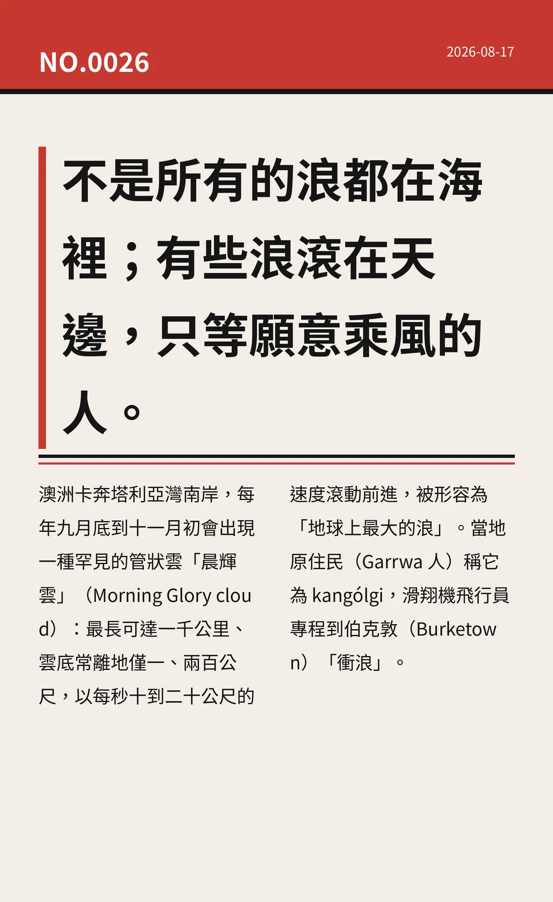

不是所有的浪都在海裡；有些浪滾在天邊，只等願意乘風的人。
澳洲卡奔塔利亞灣南岸，每年九月底到十一月初會出現一種罕見的管狀雲「晨輝雲」（Morning Glory cloud）：最長可達一千公里、雲底常離地僅一、兩百公尺，以每秒十到二十公尺的速度滾動前進，被形容為「地球上最大的浪」。當地原住民（Garrwa 人）稱它為 kangólgi，滑翔機飛行員專程到伯克敦（Burketown）「衝浪」。
fb8899798d4fbd3b冷知识由执笔的模型自行查证。逐条断言、来源与所引原句存档在纯文字副本里，未经程序逐字校验，留作事后核实。